⏱ Как наращивать ресницы за час и зарабатывать с каждого часа в 2,5 раза больше — без спешки и без единой пропущенной ресницы
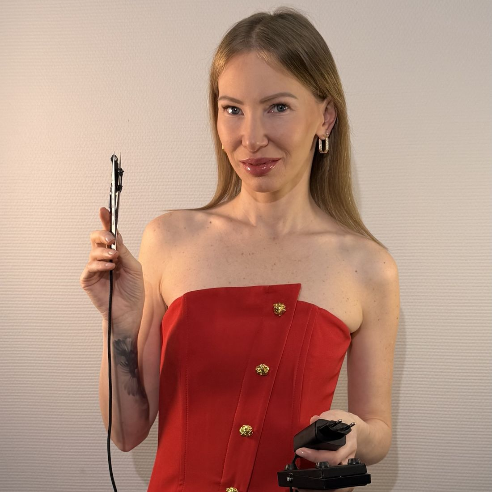
Меня зовут Юлия Сомова. Я мастер по наращиванию ресниц и преподаватель: пять лет практики и диплом государственного образца. Начинала в Москве, потом у меня был кабинет в центре Санкт-Петербурга, а сейчас — свой кабинет в центре Петрозаводска.
Сегодня полноценное наращивание занимает у меня около часа. Мой прайс — 3 500 рублей. Когда-то за 2 000–2 500 рублей я сидела над клиенткой 2,5–3 часа.
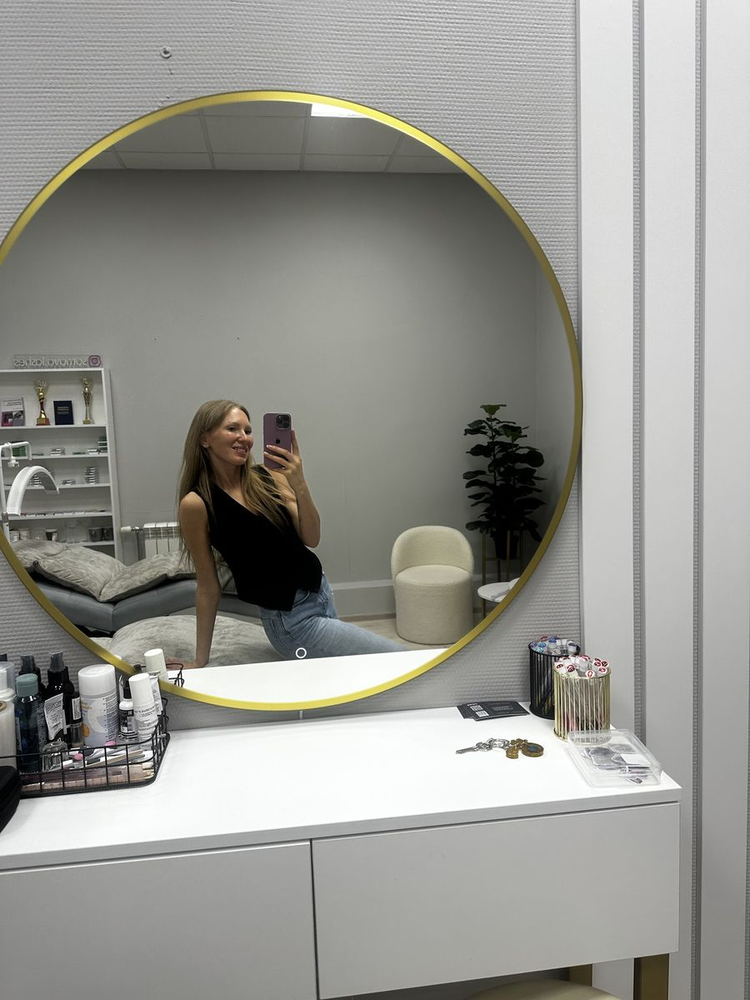
Мой кабинет в Петрозаводске
Я дважды переезжала с маленькой дочкой в новый город и каждый раз начинала с нуля: без базы, без знакомых. И каждый раз заполняла запись. Клиентки из Петербурга до сих пор пишут мне и зовут обратно. Я говорю это не чтобы похвастаться. Просто хочу, чтобы ты понимала: я не жертвую качеством ради скорости. Мне есть что терять.
А ещё я обучаю мастеров — курсы «Лэшмейкер с нуля» и «Трендовые эффекты в наращивании ресниц». В 2023 году получила награду «Лучшему преподавателю online-проекта Beauty тренер 3.0», а в 2026-м была участницей крупнейшей конференции по наращиванию ресниц — ЛэшФая.
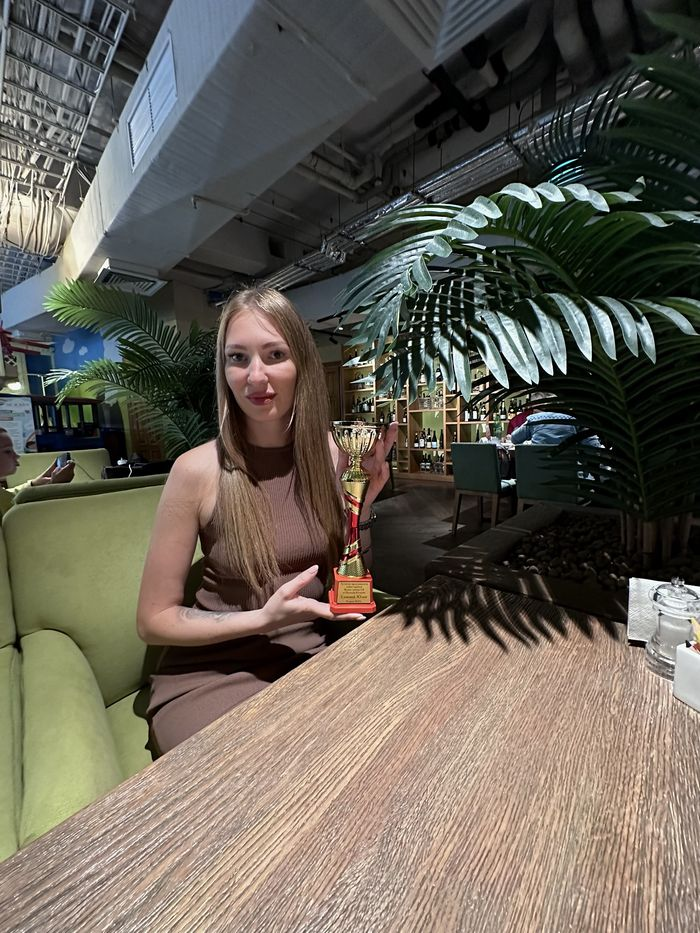
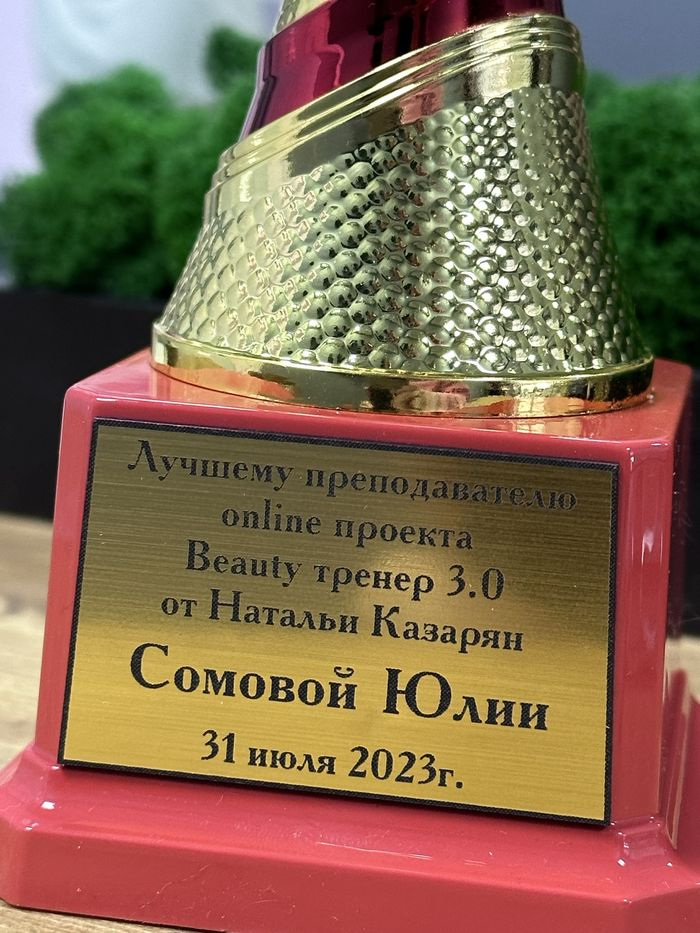
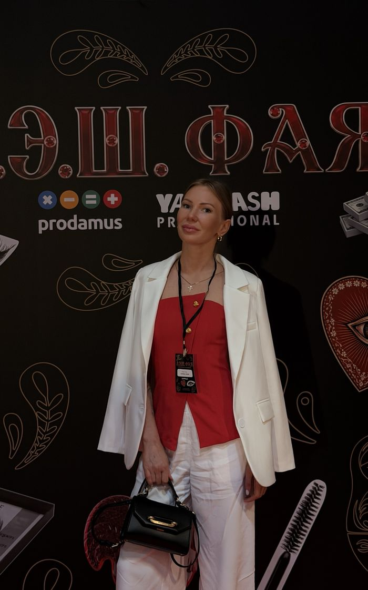
Награда «Лучший преподаватель» и ЛэшФая 2026
Сейчас у меня много свободного времени на жизнь. Я провожу время с дочкой, хожу на растяжку, на фитнес, встречаюсь с друзьями, путешествую. И при этом у меня есть деньги на всё это.
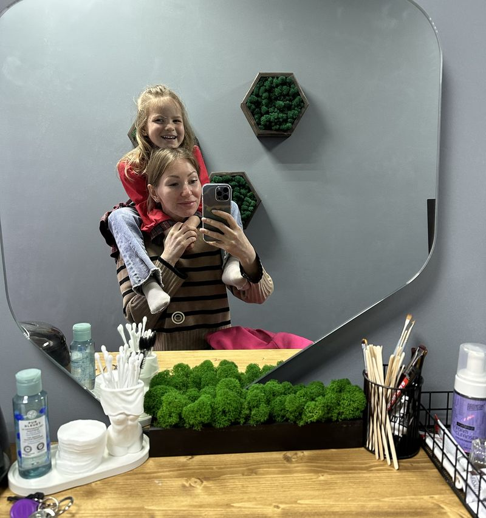
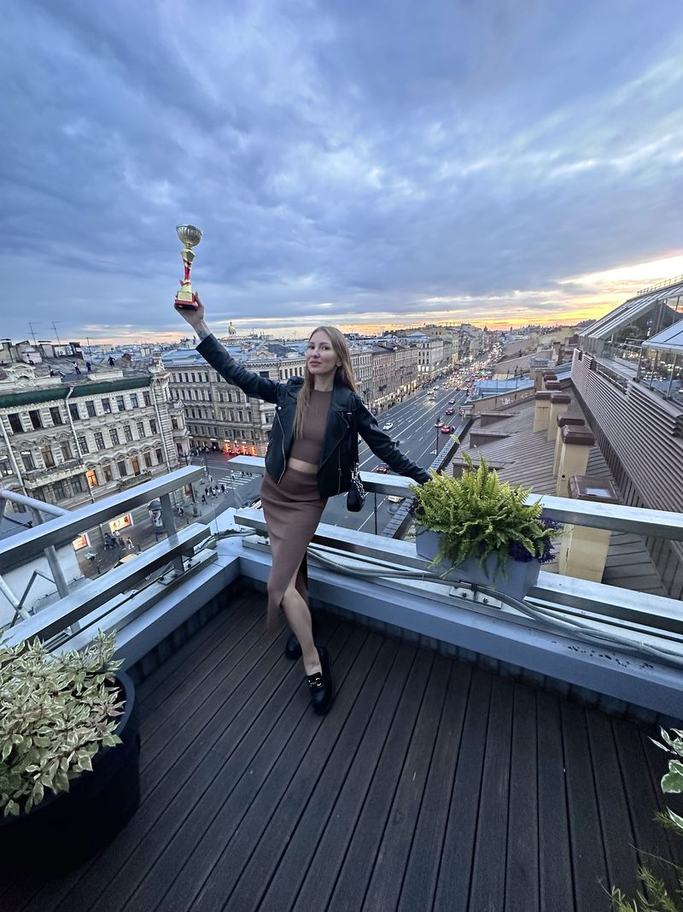
Время на дочку и на себя
Секрет не в особенных «быстрых» руках. Мои руки двигаются ровно в том же темпе, что и пять лет назад. Изменилось другое — и об этом вся статья.
Я сама сидела по три часа
Когда-то одно наращивание занимало у меня три часа. Я принимала три-четыре клиентки в день и практически весь день проводила за кушеткой. Ныла спина, поесть было некогда, к вечеру я была выжата.
А клиентки при этом просили одного: «Юль, у меня всего час». «Давай хоть что-нибудь сделаем, я опаздываю». «Я готова доплатить, только давай быстрее».
Скорость была их главной просьбой. Не скидка, не новый эффект, а время. А я не могла поднять прайс — было не за что: человек и так лежит у меня три часа и опаздывает.
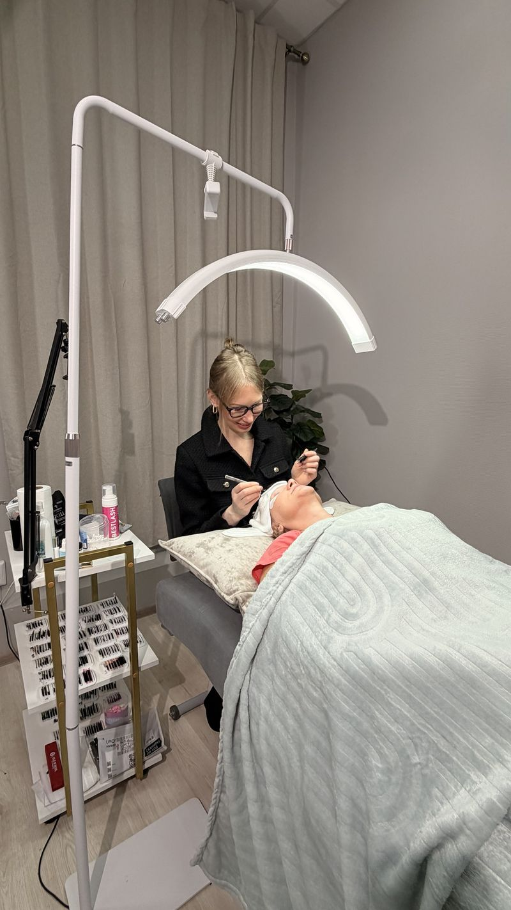
Я честно считала себя «медленной от природы». Покупала курсы по скорости, и везде было одно из двух.
Дисциплина: «Разложи баночки, поставь таймер, не отвлекайся». Работает, пока хватает силы воли. Обычно неделю.
Пропущенные ресницы. На одной практике по скорости я своими глазами видела, как мастер пропускала часть ресниц, чтобы уложиться в тайминг. Время красивое. А качество?
И я подумала: значит, скорость — это халтура. Я так не буду.
Я шла медленно: три часа, потом два с половиной, потом два. И на двух часах застряла. Последний шаг, с двух часов до одного, занял у меня целый год.
Знакомо?
Ты хороший мастер. У тебя аккуратно, носка отличная, клиентки довольны. Но:
— ты сидишь за кушеткой целыми днями, ноет спина, и даже поесть не успеваешь;
— хочешь поднять прайс, но как, если клиентки и так лежат по два-три часа;
— уходишь из дома утром, возвращаешься вечером и ничего не успеваешь: ни детей, ни себя, ни жизни;
— и где-то внутри сидит мысль: «Ускорюсь — начнутся склейки, отслойки, пропущу ресницы. Лучше уж медленно, зато качественно».
Если откликнулась хоть одна фраза, читай дальше. Особенно если последняя.
Почему ты не ускоряешься (и дело не в руках)
Держит не нехватка знаний и не «медленные руки». Держат несколько мыслей, которые звучат в голове почти у каждого мастера на двух-трёх часах:
«Быстро — значит некачественно». «Ресницы за час — это монолит». «Быстрее двух часов — нереально». «Я и так всё быстро делаю». «У меня и так нормальный доход». «Мои клиентки ценят меня такой».
Узнаёшь? Я узнаю все до одной. И это нормально: это мозг защищается как может. Качество — то, чем ты гордишься, и ускорение кажется угрозой именно ему. А одна неудачная работа весит больше ста удачных: ту клиентку с отслойками ты помнишь лучше, чем сотню довольных.
И есть ещё одна мысль, в которой мало кто признаётся: «Долго — значит старательно». Если я сижу три часа, значит, честно отработала свои деньги. А взять те же деньги за час как будто неловко.
Но клиентка платит не за часы на кушетке. Она платит за красивые ресницы и носку. А лежать меньше она будет только рада.
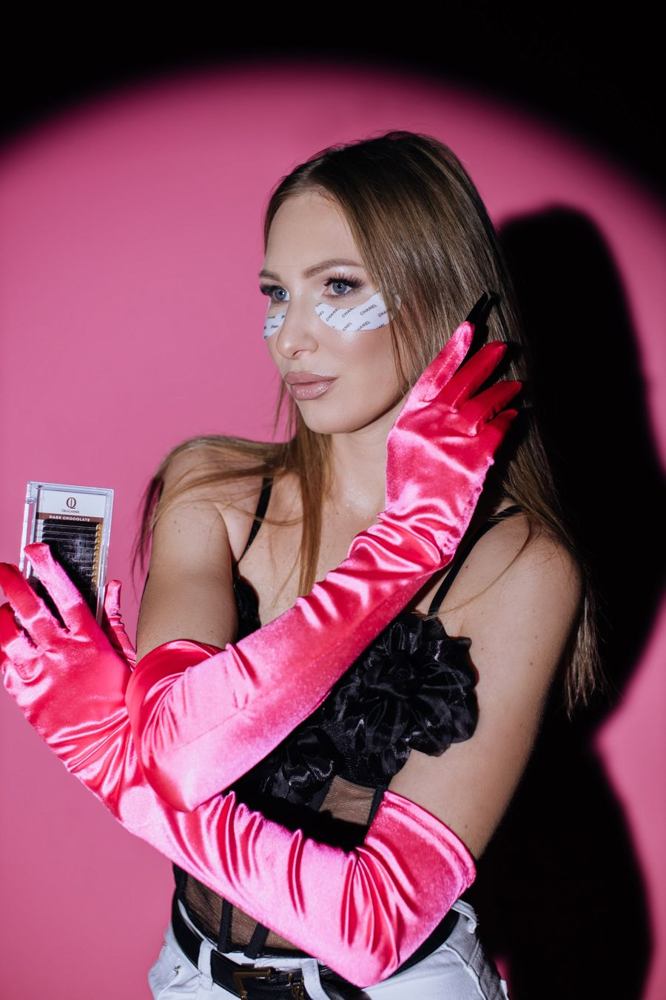
Три ошибки, из-за которых мастер годами сидит на 2–3 часах
Пытаться выиграть только качеством
Посмотри на рынок честно. Качество у большинства хороших мастеров сегодня примерно на одном уровне. Аккуратные ресницы, хорошая носка — это уже не преимущество, это норма. Разницу между «очень хорошо» и «идеально» клиентка почти не замечает: ей сложно оценить качество, пока не пройдёт три недели носки.
А вот время она видит сразу — ещё до того, как встала с кушетки.
Одна моя клиентка недавно рассказала, почему ушла от прежнего мастера. Не из-за качества: ресницы были красивые, опыт у мастера большой. Ушла, потому что лежать было очень долго.
И сравни две фразы: «Я делаю идеально» — её говорит каждый второй мастер, и ей уже никто не верит. «Я наращиваю ресницы за час» — конкретно, понятно, легко пересказать подруге. Скорость без потери качества — это готовое позиционирование.
Думать, что быстрыми рождаются
Я думала ровно так. Но если бы это был талант, я бы так и сидела на трёх часах. У меня те же руки, что и пять лет назад. Изменилась система.
Быстрые мастера не двигаются быстрее. Они делают меньше лишнего.
Постановка одной ресницы — секунды. А всё остальное — долгое обсуждение эффекта, перерисовка схемы, повторный захват, разбор склеек, подтяжка, которую ты переклеиваешь третий раз. И рука, которая сотни раз уходит от глаза к планшету и обратно. Это не качество. Это потери.
Ждать, что скорость придёт сама, с опытом
Практика важна. Но если ты годами повторяешь лишнее движение, ты просто очень хорошо научишься делать лишнее движение.
Я знаю мастеров, которые вышли с базы на трёх часах и через несколько лет, с опытом, ускорились максимум на 30 минут. Опыт есть, скорости нет. Сначала нужно поменять, что именно ты повторяешь.
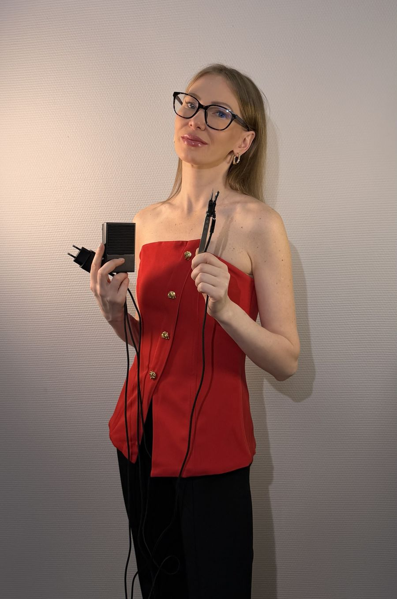
Главное, что я поняла за тот год
Чтобы работать быстрее, не нужно быстрее двигать руками. Нужно убрать лишние движения, которые рука делает сотни раз за процедуру. Не быстрее руками — короче путь.
Каждую ресницу ты ставишь в своём темпе, так же аккуратно, как сейчас. Просто движений становится меньше. По моей системе можно работать с сериалом, в своём творческом беспорядке, без таймера над душой. И без единой пропущенной ресницы.
Что тебе даст скорость: давай посчитаем
Обычный рабочий день. Три клиентки, прайс 3 000 рублей, между записями по полчаса.
13:30–16:30
17:00–20:00900 ₽/час10 часов на работе. Ушла в девять утра, вернулась в девять вечера.
11:30–12:30
13:00–14:002 250 ₽/час4 часа на работе, выручка та же. В два часа дня ты свободна.
Та же работа, тот же прайс, те же клиентки. Только в одном случае у тебя нет дня, а в другом он целиком твой. И это ещё без повышения цены.
Теперь месяц. Допустим, ты наращиваешь два с половиной часа, а могла бы полтора. При 50 клиентках это 50 лишних часов — больше шести полных рабочих дней. Если заполнить хотя бы половину этого времени, это ещё около 16 процедур и примерно 48 000 ₽ в месяц при том же прайсе.
Дальше выбираешь сама: больше клиенток, или те же деньги и свободные часы, или и то и другое. Я выбрала время. Но не хочу, чтобы ты выбирала между деньгами и жизнью. Можно и то, и другое. Главное — без фанатизма.
А ещё скорость — это та самая причина поднять прайс, которой у меня когда-то не было. И это сарафанное радио: «У меня мастер делает за час, и держится месяц» — это подруга пересказывает подруге.
Кому скорость нужна больше всех
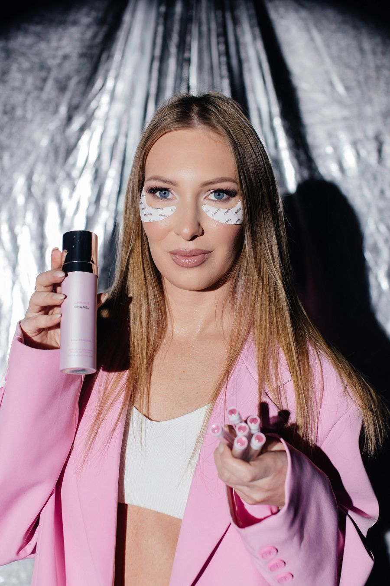
Премиальным клиенткам. Женщина, которая может позволить себе любого мастера в городе, платит не только за результат. Она платит за удобство. Её время стоит дорого: работа, бизнес, дети, встречи. Такая клиентка не будет торговаться о цене. Она спросит другое: «Сколько это займёт?» И если ты ответишь «около часа», ты уже выиграла у половины мастеров в городе. А если убедится, что ресницы красивые и держатся, — станет постоянной и приведёт подруг своего круга.
Обычным клиенткам. Мама, которую ждёт ребёнок из садика. Девушка в обеденный перерыв. Студентка между парами. Лежать с закрытыми глазами три часа тяжело всем: затекает спина, хочется пить, а попросить неловко. И однажды клиентка найдёт мастера, у которого терпеть не нужно.
Тебе самой. Три часа над глазом — нагрузка на спину, шею, зрение и кисть. Скорость — это ещё и про то, чтобы ты могла заниматься любимым делом долго.
Скорость — это деньги, позиционирование и свобода одновременно.
🥩 Три шага, с которых начинается час
Я не буду пересказывать всю систему. Но покажу три вещи, с которых я начинала. Первые две ты можешь попробовать уже на следующей клиентке.
Шаг 1. Схема за минуту
Первое место, где мы теряем время, — ещё до того, как клиентка легла.
Обычно мастер десять минут обсуждает эффект, перебирает варианты, показывает картинки. Потом клиентка ложится, и схему рисуют лёжа: глаза закрыты, зрачка не видно, рисуешь почти вслепую. Разделяешь сектора «на глаз». А потом перерисовываешь по ходу работы, вносишь корректировки.
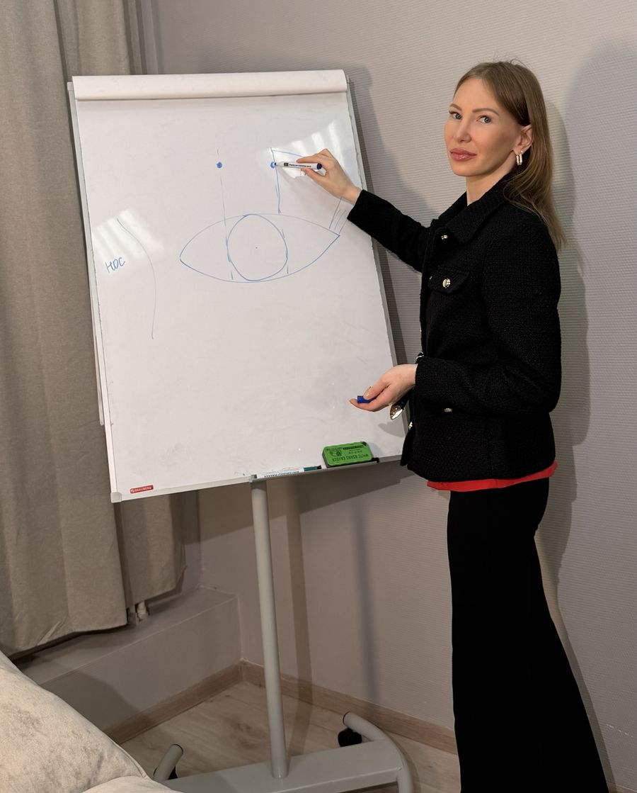
Схема строится от зрачка — ещё до того, как клиентка легла
Я делаю по-другому. Ориентиры ставлю, пока клиентка сидит и смотрит на меня. И не спрашиваю «какой эффект хотите?», а предлагаю один, с объяснением: «Вам подойдёт вот этот, потому что…». Клиентке так спокойнее: она видит, что мастер знает, что делает. А схема на патче у меня рабочая, а не красивая.
Почему это так сильно экономит время и где мастера чаще всего теряют минуты ещё до начала работы, я подробнее рассказываю в уроке.
Шаг 2. Одно движение — один результат
Перехватила ресницу, переклеила подтяжку, разобрала склейку. Кажется, секунда. Но ресниц в работе сотни. Каждое движение должно срабатывать с первого раза. Вот маленькие секреты, которые можно проверить уже завтра.
Тест пинцета. Возьми ленту с ресницами и десять раз подряд возьми одну ресницу. Если промахов больше двух, пинцет пора точить или менять. Плохой пинцет заставляет повторять одно и то же действие по два-три раза — и так сотни раз за процедуру.
Патчи. Если патч полупрозрачный и корней плохо видно, ты клеишь сверху ещё белый скотч. Это лишний этап. Плотный ярко-белый патч сразу даёт хороший обзор корней. Покажу наглядно в видеоуроке.
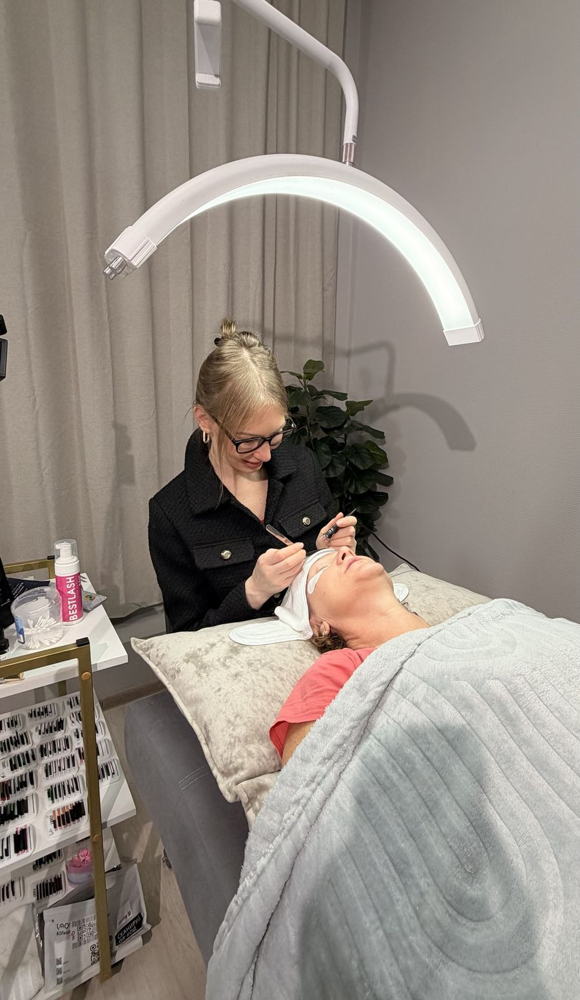
Подтяжка. Это не лишний этап, а экономия времени: она открывает рабочую зону, даёт доступ к уголкам и сразу показывает, куда ставить ресницу. Главное — ставь её грамотно и один раз. Есть разные материалы и способы постановки подтяжки — в уроке расскажу самый быстрый и самый удобный.
Важно: подтягивай веко слегка, только чтобы видеть корни. При сильной подтяжке веко приоткрывается, пары клея попадают на слизистую, и это ожог. Все вроде бы это знают, но каждая вторая клиентка приходит ко мне от другого мастера и жалуется на красные глаза и сильное щипание во время процедуры.
Бонус: стол. Всё, чем ты не пользовалась на последней процедуре, убери. Чем меньше на столе, тем меньше рука «ищет». Возможно, это покажется банальным, но это работает. А если ты новичок и не понимаешь, какие баночки нужны, а какие нет, посмотри урок: я покажу, что за чем наношу.
Шаг 3. Короткий путь руки
Этот шаг дал мне больше всего.
Посмотри, где у тебя лежат ресницы. Скорее всего, на планшете сбоку. И тогда после каждой ресницы рука проходит дугу: глаз → планшет → клей → глаз. Сотни раз за процедуру.
Я долго сопротивлялась, когда решила перенести ресницы с планшета на лоб клиентки. Нет, не на кожу 🙂 Я устроила всё на обычной повязке так, что клиентка этого вообще не чувствует. А мои движения сильно сократились. Теперь ресницы лежат прямо у рабочей зоны, и рука почти не уходит от глаза.
Честно: сначала было непривычно, хотелось всё бросить и вернуться к планшету. Но я перетерпела, отточила этот способ и довела его до идеала.
Попробуй прямо сейчас: посмотри, где у тебя лежат ресницы и клей и сколько сантиметров рука проходит до глаза. Чем короче этот путь, тем быстрее работа. И спешить для этого не нужно.
Что именно меняет повязка и почему я считаю её главной находкой на пути к часу, я рассказываю в уроке.
Честно о сроках
Я не буду обещать, что ты выйдешь на час за неделю. Скорость — это система плюс практика. Если ты недавно после базы, рассчитывай сначала на полтора часа — это уже минус час с каждой процедуры. Если ты опытный мастер с чистой техникой, тебе проще: остаётся убрать лишнее.
«Я уже покупала курсы по скорости, и ничего не изменилось»
Понимаю. Я тоже. Поэтому у меня другой подход: мы не ломаем твою технику. Меняется организация работы вокруг неё — как строится схема, где лежат ресницы, где клей, какой путь проходит рука. Никакого таймера над душой и никаких пропущенных ресниц.
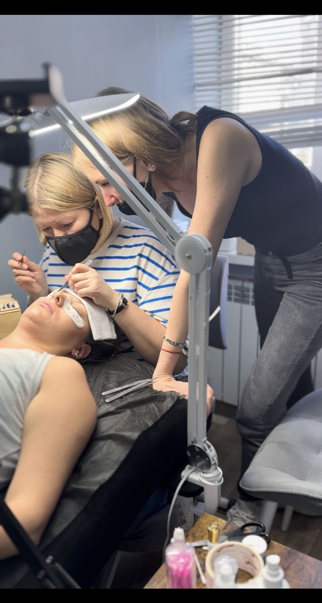
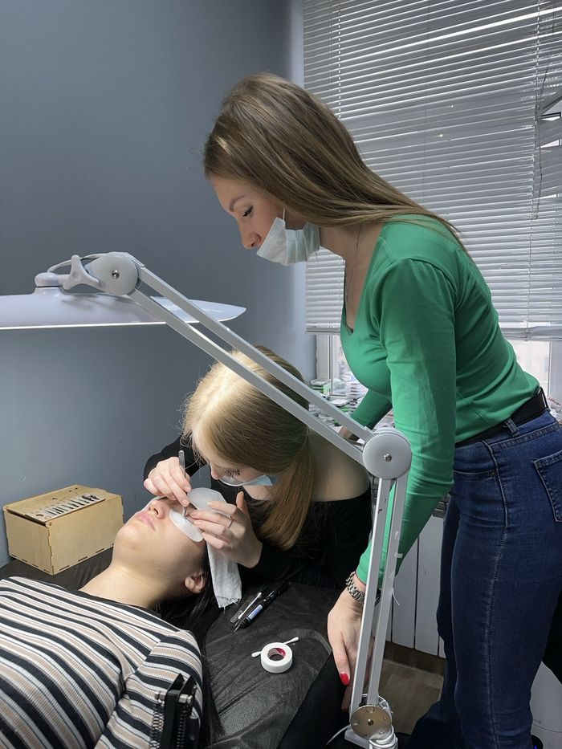
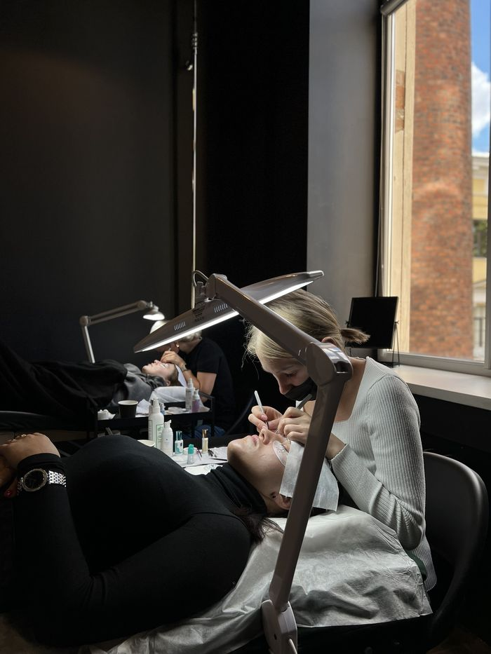
Обучаю мастеров работать быстро и аккуратно
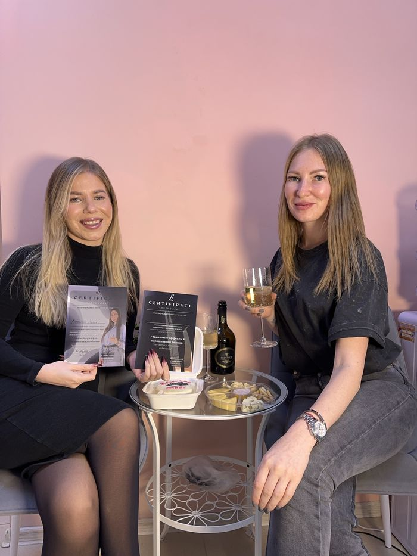
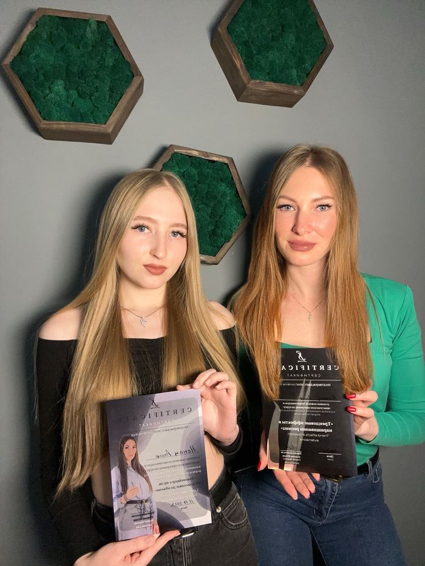
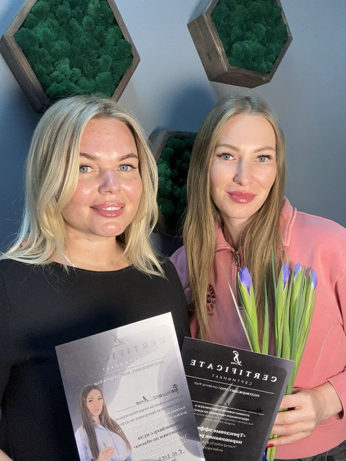
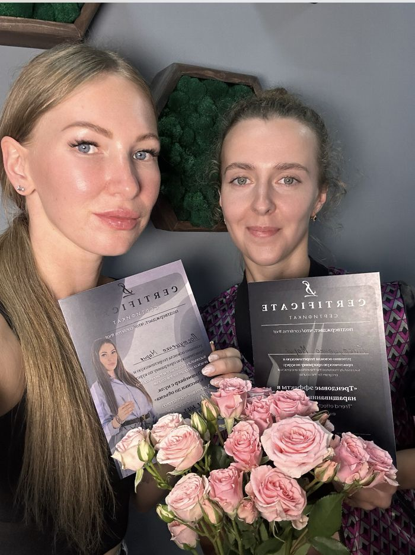
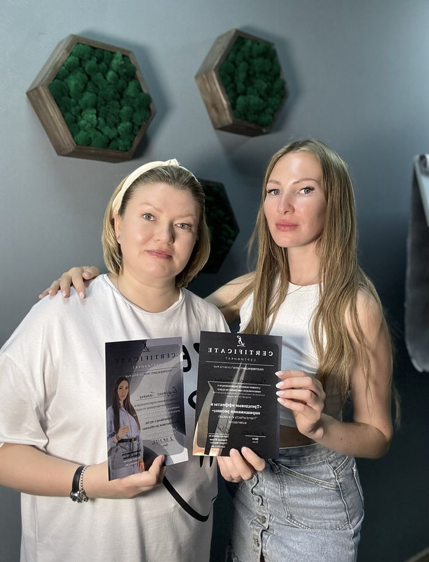
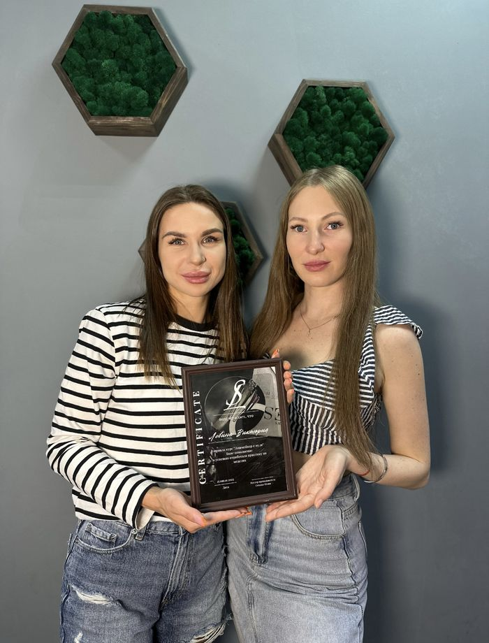
Мои ученицы: «Лэшмейкер с нуля» и «Трендовые эффекты»
Первые работы по-новому будут непривычными, я сама через это прошла. Но привыкание проходит, а сэкономленные минуты остаются.
Забери урок — и уже на следующей клиентке:
1. Поставь точки, пока она сидит, и перенеси схему на патч по моему методу — удивишься, как красиво распределятся длины. Это будет индивидуальное моделирование за минуту.
2. Возьми плотный белый патч, не трать время на подклейку из японского скотча.
3. Сделай подтяжку так, чтобы тебе было хорошо видно каждую ресничку, и потрать меньше времени на выделение родных ресниц.
4. Посмотри, что лежит на моём столе, и убери лишнее.
5. Посмотри, как работать с повязкой и сократить путь руки.
Просто прочитать статью мало, жизнь от этого сама не поменяется. Поменяет первое действие.
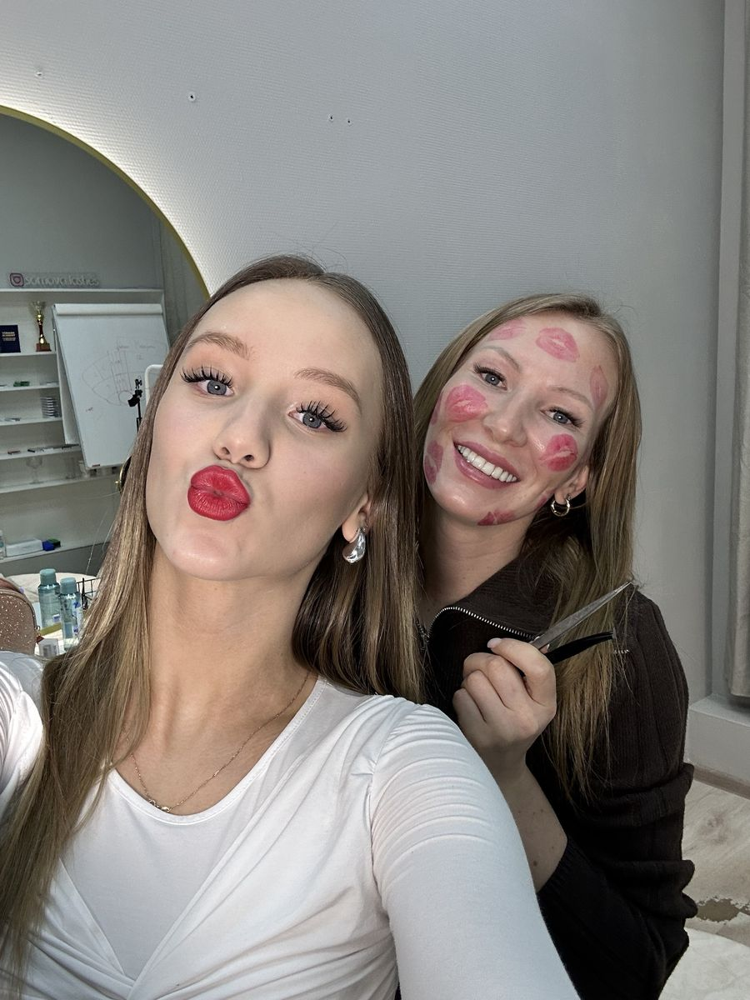
Через месяц ты можешь сидеть за кушеткой на час меньше. На каждой записи.
В статью поместилось не всё. Поэтому я записала урок на 35 минут. В уроке я:
5 лет в профессии. Лучший преподаватель Beauty тренер 3.0. Наращивание за час.
Забрать урок
После оплаты бот пришлёт ссылку на урок. А если решишь идти дальше в мой курс, 555 ₽ засчитаются в его стоимость.